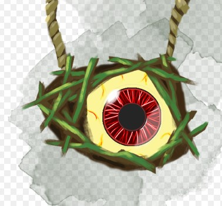
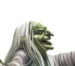
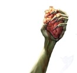
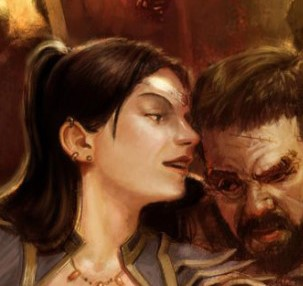

A freedom to shake off the shackles of existence, morality and even fate. A hag marches to the tune of her own heartbeat.
Hag Racial AbilitiesYour flesh reshaped, babushka’s stew was delicious, maybe you’d even ask her for the recipe. The changes, are of course welcome. Even after a few moments you feel the latent power within you. But, of course without girlfriends, life isn’t fun. So... How about we have some fun with what we have. |
||
 Evil EyeOne of your eyes is slightly bigger than the other, as a reaction once per long rest you can give disadvantage on an attack made within your line of sight. |
 Hag CharismaYou have an easy going attitude, that gravitates people to you. Once per long rest you can decide to double the proficiency bonus of the roll of Deception, Persuasion, Intimidation, Performance. Separately for every of the listed skills. |
 Hag Skincare RoutineYour skin is covered in warts and rashes, hardening it significantly against attacks. All damage you take is reduced by 1 (but not lower than 1) from all sources except for psychic damage. |
Tier 1: Haggling, scheming, enjoying life.New day, new you. Toad balm for silkier skin, some swamp water for a good perfume, a few dirty branches as accessories, oh! And how could you forget the bloody lip balm.Now, all dolled up, you are ready for another fun day. |
|
 Spread a rumourThere is almost nothing you like more than spreading gossip. The numbers of gossips currently circulating is equal to your proficiency bonus. The gossips take effect if at least 10 people not part of your party have listened to it.The effects can be -1 to AC -1 to an ability score -1 to damage dealt (others, discuss with the dm, according to his digression) |
You chose knitting as your favourite pastime, many materials for beautiful handkerchiefs and carpets,
secret techniques that are going to be honed for millennia. Just remember, that all granny makes, is
made with tender care and love.
You are able to knit out of strange materials. If the material is able to turn into the string it might have
some fun properties. Thing you knit, require attunement by the user, and are undetectable by both
detect magic and identify spell. The number of materials woven into the creation is equal to your
proficiency bonus -1.
Toad Snot (at least 2 meters) (Gives the knitted product an ability to deal 1 poison damage on impact for
the first 10 impacts (refreshed at dawn)
Ogre Nose hairs (at least 2 meters) (Gives the knitted product an ability to increase the AC of the wearer
by 1 for the first 10 hits(refreshed at dawn)
Dragons eyelashes (at least 2 meters) (Gives the knitted product a +1 to the wearers charisma checks
made to seduce)
Arcane telescope Lens (If embroidered, can be used once per long rest to increase the range of a spell by 30.)
Vial of Sacred Shadow (Sprayed over the creation, reduces the wisom score of the wearer by 1 and increases a chosen stat by 1.)
You have taken on a responsibility for maintenance of the Life in the realm of the Spires of the
Dominion. The more your connection with nature grows, the more your mind dissolves in the collective.
((Passive))
Myxellal overgrowth
Each time you use an ability on this list, you grow your connection to life itself, increasing your
maximum health by 1d10-7. For every subsequent use of these abilities the health increase is increased
by 10 (1d10+3→ 1d10+13 and so on)
Once this bonus reaches 150 Health you connect with the nature fully, losing any form of individuality.
If you die with this power, you can sacrifice the godhood, to survive, this however will end most life in
the Spires of the dominion, and will severely weaken all creatures connected to nature.
Abilities
1)Myconid Minions
You summon a Myconid minion that sprouts out of your body. Its a small humanoid with all stats equal
10, evasion and 1 HP. There are 4 types of minions to summon. They have their turn before you on the
initiative order.
1.Zapper Myconid
Uses its action to cast chain lightning with spell save DC equal to yours.
2. Dapper Myconid
While alive this Myconid oozes confidence giving allies automatic success on any first wisdom saving
throw they have to make. If the target takes damage, Dapper Myconid can help them again.
3. Proper Myconid
Channels a heal at the designated target as an action, healing them to full health. Can switch targets
once as a reaction, immediately healing the target to full HP.
4. Sapper Myconid
At the start of his turn rushes at the enemy, forcing them to make a DC 21 dex save or suffer 15d10 fire
damage +1d10 damage multiplied by the difference between the number rolled and the DC.
2) Grove overgrowth
Creates a 100 feet area around you overgrown with mushrooms and plants. Anyone you designate in
this area has all the damage they take reduced by your level while they remain inside, and you can freely
teleport in this area as a bonus action.
3) Spore of destruction
You force the target to make a DC 21 constitution saving throw. Upon fail the spore embeds itself
comfortably in the targets body dealing 1d10 damage at the start of the targets turn. Each subsequent
instance of damage is doubled. They can make a save at the end of their turn, ending the effect. Upon
failing the save the damage is doubled as well.
4) Fruits of the Harvest
You sprout branches out of your body, ripened with fruit. You imbue them with a spell of your choosing
by casting it into the fruit. The number of fruit is equal to 1d6+ your proficiency bonus. Creature that
consumes the fruit can use the embedded spell at will without expending resources until you use any
ability from the power of this god again.
Fruits taste may wary, and the creatures that consume the fruit will lose the ability to swim or even stay
afloat in salt water.